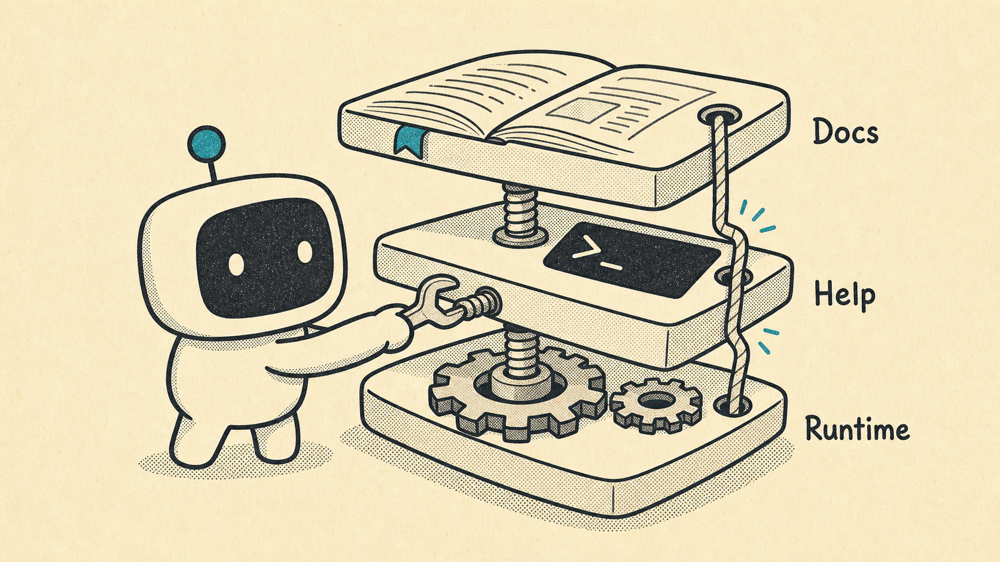
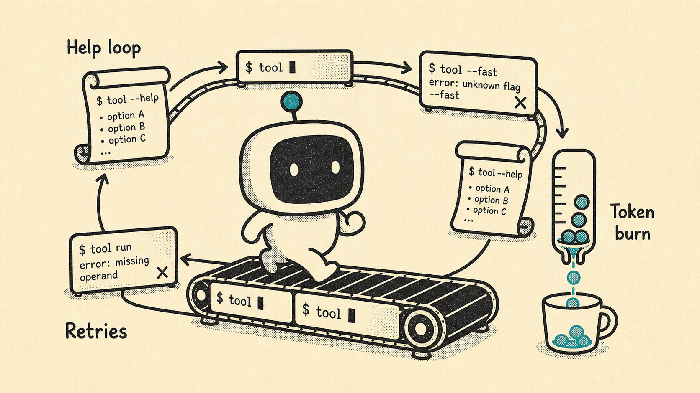
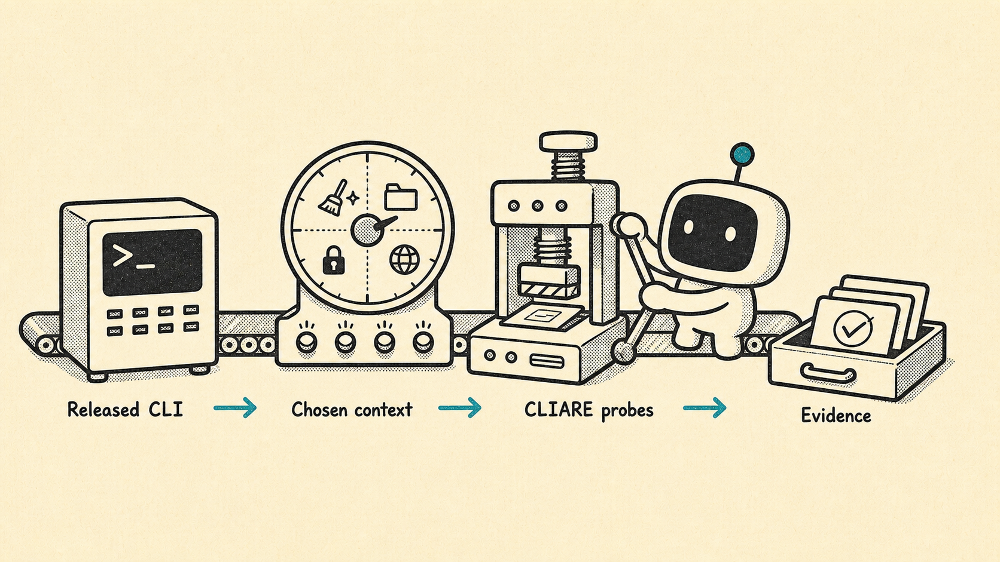

Canonical command help should work on every real command path.
Product story
From CLI drift to evidence-backed command shape.

Surfaces drift
Docs, help text, and the released binary can stop matching as a CLI grows.

Agents pay the tax
Without a shape, agents rediscover commands by trying help, flags, errors, and retries.

CLIARE records evidence
Probes run under bounded contexts, then produce durable evidence and command artifacts.